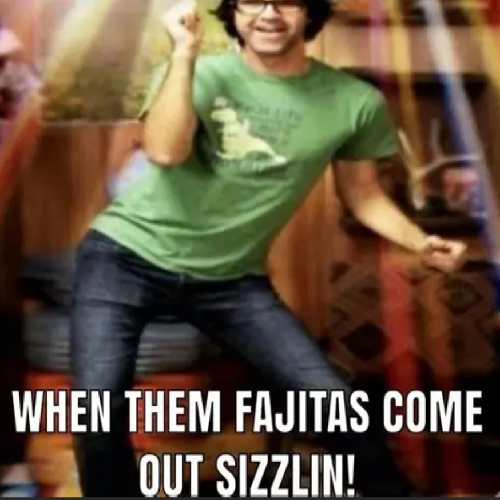

mblep - album - bonus section
number of songs - 14
runtime - approx 13:11
made in ultrabox/beepbox

1. Boss
Boss (ultrabox)
a prototype of what would become evil wizard battle, originally designed as a generic boss theme.
2. know your place!!!
know your place!!! (ultrabox)
felt too similar too all the other songs in the album that sounded 'cool' (well well well, ollie, !! suspicion !!) so i had to condemn it to the bonus section. though i do like the weird gross feeling this one gives off.
it used to be called 'despicable prance' and it does feel like someone despicable is prancing
3. electric guitar conversation
electric guitar conversation (ultrabox)
they're electric guitars and they're conversing
4. endurance test
electric guitar conversation (file garden)
electric guitar conversation (ultrabox)
only 5.27% of people survive this song. if you're reading this you have 4 hours.
5. Fist Punchies
Fist Punchies (file garden)
the harmonising lead and bass in the a part taken from here
second lead taken from here
maybe the best song i made in my garageband era. would make for a good battle theme, thus the name. a kid at my school liked this one so much he made it his ringtone for like 6 months. thanks eli.
6. Jolly Village
Jolly Village (file garden)
ultrabox link unavailable 😢 didn't download it
just an alternate version of toadstool village. made to feel more 'town' than 'village'
7. Ollie (old ver)
Ollie (file garden)
Ollie (beepbox)
an older version of ollie. third song i made in beepbox and first song i made for the album (before it got damned to the bonus section). i think i actually prefer this version compared to the newer one (it just has a roughness about it that really captured what i was going for)
8. Octuple Kickflip
Octuple Kickflip (file garden)
Octuple Kickflip (beepbox)
i was really proud of ollie when i first made it and decided i'd make a version that was fast and cool and stuff
9. spooky scary type beat but it's in chiptune this time
spooky scary type beat but it's in chiptune this time (file garden)
spooky scary type beat but it's in chiptune this time (ultrabox)
i made this version cuz i was bord
10. Jaunty Village
Jaunty Village (file garden)
ultrabox link unavailable 😢 didn't download it
for my least favourite song i made a lot of versions
the detune is a little gross on this one
11. Title
Title (file garden)
title and ending theme for an old scratch game i made (about just before summer 2024). from this point on, they were all made in garageband to be put in this game.
12. Swanky Arachnids
Swanky Arachnids (file garden)
the scratch game was a dungeon crawler in which you fought spiders. the spiders wore top hats cause i'm so quirky and random, so i called the song swanky arachnids.
13. Give Me Money
Give Me Money (file garden)
a shop theme
14. The Giant Enemy
The Giant Enemy (file garden)
the boss was a giant enemy spider. all the references in this song are not on the nose at all.